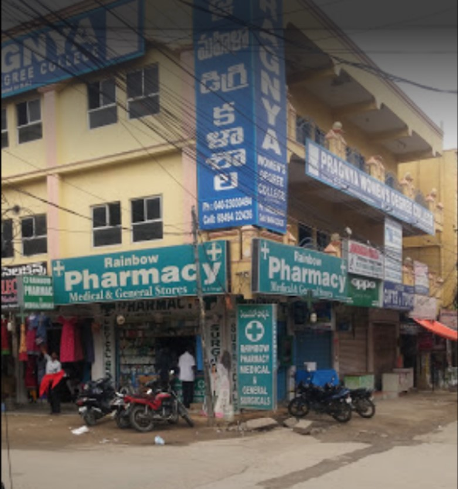

Pragnya Degree College is an educational institution located in Hyderabad, Telangana.
The college aims to provide quality education and create a positive learning environment for students.
It offers various undergraduate and postgraduate courses to help students develop their academic knowledge, practical skills, and confidence.
The college encourages students to participate in academic activities, cultural programmes, sports, and other extracurricular activities.
With the support of experienced faculty members and college facilities, Pragnya Degree College focuses on the overall development of students and prepares them for future career opportunities.
